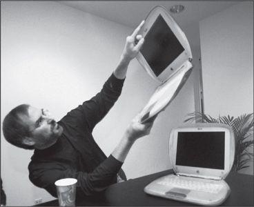

With the iBook, 1999
Ever since the introduction of the iMac in 1998, Jobs and Jony Ive had made beguiling design a signature of Apple’s computers. There was a consumer laptop that looked like a tangerine clam, and a professional desktop computer that suggested a Zen ice cube. Like bell-bottoms that turn up in the back of a closet, some of these models looked better at the time than they do in retrospect, and they show a love of design that was, on occasion, a bit too exuberant. But they set Apple apart and provided the publicity bursts it needed to survive in a Windows world.
自从1998年推出iMac后，乔布斯和乔尼·艾弗将诱人的设计变成了苹果电脑的招牌。他们推出了橙色蛤壳式笔记本电脑，以及标镑“禅意”、外观如冰块般的专业台式电脑。有些产品就好比你从衣橱角落里翻出的喇叭牛仔裤，当时看起来比现在回想起来要更好；这些产品体现出苹果对设计的热爱，这种热爱有时过于强烈。但是，苹果因此脱颍而出，并获得了在Windows世界中生存所需要的名气。
The Power Mac G4 Cube, released in 2000, was so alluring that one ended up on display in New York’s Museum of Modern Art. An eight-inch perfect cube the size of a Kleenex box, it was the pure expression of Jobs’s aesthetic. The sophistication came from minimalism. No buttons marred the surface. There was no CD tray, just a subtle slot. And as with the original Macintosh, there was no fan. Pure Zen. “When you see something that’s so thoughtful on the outside you say, ‘Oh, wow, it must be really thoughtful on the inside,’” he told Newsweek. “We make progress by eliminating things, by removing the superfluous.”
苹果公司2000年推出的PowerMac G4 Cube非常迷人，最终进入纽约现代艺术博物馆。该产品是一台只有8英寸的完美立方体，跟舒洁（Kleenex）面巾纸盒一般大小。它是乔布斯审美观的纯粹表达。它的精密源于极简主义风格。该机器从外部看不到按钮；没有CD托盘，只有一个微小的插槽。同早期的麦金塔一样，该款产品也没有风扇。纯粹的禅意。“当看到一个外表如此贴心的东西时，你会想，‘噢，哇，内部一定也非常精细’。”乔布斯在接受《新闻周刊》采访时说道，“我们通过简化去除多余的东西，取得进步。”
The G4 Cube was almost ostentatious in its lack of ostentation, and it was powerful. But it was not a success. It had been designed as a high-end desktop, but Jobs wanted to turn it, as he did almost every product, into something that could be mass-marketed to consumers. The Cube ended up not serving either market well. Workaday professionals weren’t seeking a jewel-like sculpture for their desks, and mass-market consumers were not eager to spend twice what they’d pay for a plain vanilla desktop. Jobs predicted that Apple would sell 200,000 Cubes per quarter. In its first quarter it sold half that. The next quarter it sold fewer than thirty thousand units. Jobs later admitted that he had overdesigned and overpriced the Cube, just as he had the NeXT computer. But gradually he was learning his lesson. In building devices like the iPod, he would control costs and make the trade-offs necessary to get them launched on time and on budget.
G4Cube并非虚有其表，其功能也很强大。但是，该产品并不成功。它已然被设计成一款高端台式电脑，但是乔布斯想要将其推向大众市场，就像他的几乎所有产品一样。结果，Cube在两个市场的表现都不好。普通的专业人士并不追求在自己的桌上放一台宝石般的雕塑，而大众市场消费者宁可购买一款平淡无奇的台式机，也不愿花两倍的价钱买这款产品。
乔布斯曾预计，苹果公司每季度将卖出20万台Cube。但在其销售的第一季度，只卖出了预计销量的一半。第二季度，销量低于3万台。乔布斯后来承认，Cube设计过度且定价过髙，就像当年的NeXT电脑一样。但是，渐渐地，乔布斯吸取了自己的教训。在制造iPod这类设备时，他会控制成本并作出必要的权衡，让产品能够在预算内按照预定时间发布。
Partly because of the poor sales of the Cube, Apple produced disappointing revenue numbers in September 2000. That was just when the tech bubble was deflating and Apple’s education market was declining. The company’s stock price, which had been above $60, fell 50% in one day, and by early December it was below $15.
2000年9月，苹果公司的营收不佳，部分原因是Cube的销售业绩太差。当时，科技泡沫开始破裂，苹果公司在教育市场正处于衰落状态。苹果公司的股价之前一直处于60美元以上，在一天之内下跌50%；至同年12月初，其股价巳低于15美元。
None of this deterred Jobs from continuing to push for distinctive, even distracting, new design. When flat-screen displays became commercially viable, he decided it was time to replace the iMac, the translucent consumer desktop computer that looked as if it were from a Jetsons cartoon. Ive came up with a model that was somewhat conventional, with the guts of the computer attached to the back of the flat screen. Jobs didn’t like it. As he often did, both at Pixar and at Apple, he slammed on the brakes to rethink things. There was something about the design that lacked purity, he felt. “Why have this flat display if you’re going to glom all this stuff on its back?” he asked Ive. “We should let each element be true to itself.”
但这些都没能阻止乔布斯继续推动个性鲜明，甚至是喧宾夺主的新设计。当纯平显示器具备了商业可行性后，他决定用新产品取代iMac；iMac是一款半透明的台式电脑，就像《杰森一家》里的东西。艾弗想出了一个有些传统的模型，将电脑主机和纯平显示器合而为一。乔布斯不喜欢这个提议，一如在皮克斯和苹果常做的那样，他立即决定重新思考方案。他觉得艾弗提出的设计缺少纯粹性。“如果你要把所有东西都塞到显示器后面，那干吗要纯平的显示器？”乔布斯向艾弗发问道，“我们应该让每个元素都忠于它本身。”
Jobs went home early that day to mull over the problem, then called Ive to come by. They wandered into the garden, which Jobs’s wife had planted with a profusion of sunflowers. “Every year I do something wild with the garden, and that time it involved masses of sunflowers, with a sunflower house for the kids,” she recalled. “Jony and Steve were riffing on their design problem, then Jony asked, ‘What if the screen was separated from the base like a sunflower?’ He got excited and started sketching.” Ive liked his designs to suggest a narrative, and he realized that a sunflower shape would convey that the flat screen was so fluid and responsive that it could reach for the sun.
当天，乔布斯早早回到家，开始仔细考虑这个问题，并把艾弗也叫来了。他们漫步走进花园，乔布斯的妻子在花园里种了许多向日葵。“每年我都在花园里做些疯狂的事儿，当时就是种了很多向日葵，给孩子们一个满是向日葵的家。”她回忆道，“乔尼和史蒂夫当时正在思考产品的设计问题，然后乔尼问，‘把屏幕像向日葵那样和底座分离开来怎样？’他感到很兴奋，并开始画起了草图。”他很喜欢用自己的设计来表达一个故事，他意识到，向日葵造型能传达出纯平显示器的流畅性和出色的响应能力，仿佛随时可以迎着太阳转动。
In Ive’s new design, the Mac’s screen was attached to a movable chrome neck, so that it looked not only like a sunflower but also like a cheeky Luxo lamp. Indeed it evoked the playful personality of Luxo Jr. in the first short film that John Lasseter had made at Pixar. Apple took out many patents for the design, most crediting Ive, but on one of them, for “a computer system having a movable assembly attached to a flat panel display,” Jobs listed himself as the primary inventor.
在艾弗的新设计中，Mac的屏幕连着一个铬合金活动支颈，这样整个显示器不仅看上去像向日葵，也让人联想到《顽皮跳跳灯》中小台灯的俏皮个性，该动画片是约翰·拉塞特为皮克斯制作的第一部短片。苹果为这一设计申请了许多专利，大多数都计入艾弗名下，但就其中一项设计——“平板显示器和底座之间由一个活动组件连接”，乔布斯将自己列为主要发明者。
In hindsight, some of Apple’s Macintosh designs may seem a bit too cute. But other computer makers were at the other extreme. It was an industry that you’d expect to be innovative, but instead it was dominated by cheaply designed generic boxes. After a few ill-conceived stabs at painting on blue colors and trying new shapes, companies such as Dell, Compaq, and HP commoditized computers by outsourcing manufacturing and competing on price. With its spunky designs and its pathbreaking applications like iTunes and iMovie, Apple was about the only place innovating.
现在回想起来，苹果麦金塔的一些设计似乎有点儿太过可爱了。然而其他电脑制造商处于另一个极端。人们以为计算机行业应该充满创新，但实际上，这一行业充斥着设计粗糙的通用型电脑。戴尔、康柏和惠普这些公司，曾经贸然地尝试过新造型并把电脑喷涂成蓝色，后来也都将电脑制造外包出去，并展开价格竞争。苹果凭借大胆的设计和开创性的应用，如iTunes和iMovie，成为唯一有所创新的企业。
Apple’s innovations were more than skin-deep. Since 1994 it had been using a microprocessor, called the PowerPC, that was made by a partnership of IBM and Motorola. For a few years it was faster than Intel’s chips, an advantage that Apple touted in humorous commercials. By the time of Jobs’s return, however, Motorola had fallen behind in producing new versions of the chip. This provoked a fight between Jobs and Motorola’s CEO Chris Galvin. When Jobs decided to stop licensing the Macintosh operating system to clone makers, right after his return to Apple in 1997, he suggested to Galvin that he might consider making an exception for Motorola’s clone, the StarMax Mac, but only if Motorola sped up development of new PowerPC chips for laptops. The call got heated. Jobs offered his opinion that Motorola chips sucked. Galvin, who also had a temper, pushed back. Jobs hung up on him. The Motorola StarMax was canceled, and Jobs secretly began planning to move Apple off the Motorola-IBM PowerPC chip and to adopt, instead, Intel’s. This would not be a simple task. It was akin to writing a new operating system.
苹果公司的创新并非流于表面。1994年起，该公司就一直在使用PowerPC芯片，该微处理器由IBM和摩托罗拉联合生产。在当时几年的时间里，该芯片比英特尔公司生产的芯片更快，苹果公司曾在自己的幽默广告中吹捧过这一点。然而，当乔布斯重回苹果时，摩托罗拉在生产新版本芯片方面已开始落后。这引发了乔布斯和摩托罗拉CEO克里斯·髙尔文（ChrisGalvin）的争吵。1997年，乔布斯回到苹果后，立即决定停止授权同类电脑制造商使用麦金塔操作系统。他打电话向高尔文提议，如果摩托罗拉加速研发可用于笔记本电脑的新版威力芯片，那么苹果公司可能会考虑为摩托罗拉破例，授权其StarMaxMac兼容机使用麦金塔操作系统。两人的对话越来越激烈。乔布斯对高尔文说，摩托罗拉的芯片烂透了。高尔文也是个有脾气的人，立即反驳。乔布斯挂了他的电话。摩托罗拉停止生产StarMax电脑，而乔布斯则开始暗中计划抛弃摩托罗拉/IBM的威力芯片，转而投向英特尔的怀抱。换芯片并不容易，这相当于要重新编写整个操作系统。
Jobs did not cede any real power to his board, but he did use its meetings to kick around ideas and think through strategies in confidence, while he stood at a whiteboard and led freewheeling discussions. For eighteen months the directors discussed whether to move to an Intel architecture. “We debated it, we asked a lot of questions, and finally we all decided it needed to be done,” board member Art Levinson recalled.
乔布斯并没有给予董事会任何实质性权力，但他还是秘密同董事会成员一起从各个角度讨论想法，并仔细思考战略。会议中，他会站在白板前，主导自由讨论。就是否应该转移至英特尔架构，董事们讨论了18个月。“我们就这个事情进行辩论，提出了很多问题，最终一致决定有必要这么做。”董事会成员亚瑟·莱文森回忆道。
Paul Otellini, who was then president and later became CEO of Intel, began huddling with Jobs. They had gotten to know each other when Jobs was struggling to keep NeXT alive and, as Otellini later put it, “his arrogance had been temporarily tempered.” Otellini has a calm and wry take on people, and he was amused rather than put off when he discovered, upon dealing with Jobs at Apple in the early 2000s, “that his juices were going again, and he wasn’t nearly as humble anymore.” Intel had deals with other computer makers, and Jobs wanted a better price than they had. “We had to find creative ways to bridge the numbers,” said Otellini. Most of the negotiating was done, as Jobs preferred, on long walks, sometimes on the trails up to the radio telescope known as the Dish above the Stanford campus. Jobs would start the walk by telling a story and explaining how he saw the history of computers evolving. By the end he would be haggling over price.
保罗·欧德宁（PaulOtellini）时任英特尔公司总裁，后来成为该公司CEO；他开始与乔布斯私下碰头。两人相识于乔布斯努力保全NeXT公司的时候，欧德宁后来回忆，“他的傲慢态度那时还算有所收敛。”欧德宁待人冷静幽默。2000年过后的最初几年，他同乔布斯谈生意的时候，发现乔布斯“暴躁脾气又回来了，不像当初那样谦恭”，但欧德宁并不生气，反而觉得很有趣。英特尔公司与其他电脑制造商也有合作，乔布斯希望拿到比那些公司更好的价格。“我们必须用有创造性的方式来谈拢数字。”欧德宁说。两人的大多数谈判都在散步时完成，这是乔布斯喜欢的方式。有时他们会沿着斯坦福校园内的小径，一路漫步到山丘上。散步开始时，乔布斯会以一个故事开头，阐述自己如何看待计算机演进的历史，而散步结束时，已经在就具体数字讨价还价了。
“Intel had a reputation for being a tough partner, coming out of the days when it was run by Andy Grove and Craig Barrett,” Otellini said. “I wanted to show that Intel was a company you could work with.” So a crack team from Intel worked with Apple, and they were able to beat the conversion deadline by six months. Jobs invited Otellini to Apple’s Top 100 management retreat, where he donned one of the famous Intel lab coats that looked like a bunny suit and gave Jobs a big hug. At the public announcement in 2005, the usually reserved Otellini repeated the act. “Apple and Intel, together at last,” flashed on the big screen.
“人们都觉得英特尔是个难对付的合作伙伴，这是安迪·格鲁夫和克雷格·巴雷特（CraigBarrett）掌管英特尔时给人的印象。”欧德宁说，“而我想要告诉大家，英特尔是一家可以合作的公司。”于是，英特尔派出一支精干团队与苹果公司合作，在6个月的期限内成功完成了芯片转换。乔布斯邀请欧德宁参加苹果公司百杰集思会。欧德宁身着兔子装一样的英特尔实验室外套，拥抱了乔布斯。2005年两家公司就合作发表了公开声明，一向矜持的欧德宁又一次做出了同样的举动。大屏幕上出现了“苹果和英特尔，终于在」起”。
Bill Gates was amazed. Designing crazy-colored cases did not impress him, but a secret program to switch the CPU in a computer, completed seamlessly and on time, was a feat he truly admired. “If you’d said, ‘Okay, we’re going to change our microprocessor chip, and we’re not going to lose a beat,’ that sounds impossible,” he told me years later, when I asked him about Jobs’s accomplishments. “They basically did that.”
比尔·盖茨对此感到惊奇。他对于设计色彩花哨的电脑机箱并无兴趣，但是秘密换掉电脑内部的CPU，并能按时无缝完成，这是他真正钦佩的壮举。多年后我采访盖茨，提起乔布斯的成就，他告诉我：“如果你说，好，我们现在要换掉微处理器芯片，但是一拍都不能落下，这听起来是不可能的，但他们基本做到了。”
Among Jobs’s quirks was his attitude toward money. When he returned to Apple in 1997, he portrayed himself as a person working for $1 a year, doing it for the benefit of the company rather than himself. Nevertheless he embraced the idea of option megagrants—granting huge bundles of options to buy Apple stock at a preset price—that were not subject to the usual good compensation practices of board committee reviews and performance criteria.
乔布斯的怪癖之一便是对于金钱的态度。1997年重回苹果时，他把自己描述为这样一种人：可以为1美元的年薪工作，为的是公司的利益，而非个人利益。但是，对于不受惯常的董事会审查和业绩考核约束的巨额期权激励政策（即授予大量以一个既定价格购买苹果股票的权利），他却推崇备至。
When he dropped the “interim” in his title and officially became CEO, he was offered (in addition to the airplane) a megagrant by Ed Woolard and the board at the beginning of 2000; defying the image he cultivated of not being interested in money, he had stunned Woolard by asking for even more options than the board had proposed. But soon after he got them, it turned out that it was for naught. Apple stock cratered in September 2000—due to disappointing sales of the Cube plus the bursting of the Internet bubble—which made the options worthless.
当他于2000年初甩掉了头衔中的“临时”二字，正式成为了CEO，他从埃德·伍拉德和董事会那里得到了一大笔期权（还有那架飞机）。有悖于他一直以来所表现出那种不贪财的形象，他索要的期权数量甚至比董事会最初的提议还要多，令伍拉德大跌眼镜。不过就在他将这些期杈收入囊中后没多久，这一切都变得毫无意义。受累于Cube令人失望的销量，加之互联网泡沫的破裂，苹果股价于2000年9月一泻千里，令这些期权变得一钱不值。
Making matters worse was a June 2001 cover story in Fortune about overcompensated CEOs, “The Great CEO Pay Heist.” A mug of Jobs, smiling smugly, filled the cover. Even though his options were underwater at the time, the technical method of valuing them when granted (known as a Black-Scholes valuation) set their worth at $872 million. Fortune proclaimed it “by far” the largest compensation package ever granted a CEO. It was the worst of all worlds: Jobs had almost no money that he could put in his pocket for his four years of hard and successful turnaround work at Apple, yet he had become the poster child of greedy CEOs, making him look hypocritical and undermining his self-image. He wrote a scathing letter to the editor, declaring that his options actually “are worth zero” and offering to sell them to Fortune for half of the supposed $872 million the magazine had reported.
雪上加霜的是，《财富》杂志2001年6月刊登了一篇题为“薪酬大盗CEO”的封面报道，直指CEO薪酬过高的问题。那期杂志的封面上就是杨杨得意的乔布斯。虽然他所持有的期杈此时并无价值，但在这些期杈被授予的当时，技术估值方法（被称为“布莱克-斯科尔斯估值法”）给它们的定价是8.72亿美元。《财富》声称这“绝对是”有史以来给予CEO的最丰厚的一笔报酬。真是悲惨至极。用4年的艰辛工作带领苹果成功复苏的乔布斯兜里几乎没有一分钱，此时却成了贪婪CEO的典型代表，这让他看起来像是一个伪君子，也损苦了他的自我形象。他给编辑写了一封言辞激烈的信，表示自己的期权实际上价值为零”，既然《财富》报道的价值是8.72亿美元，他愿意打个五折把这些期权卖给《财富》。
In the meantime Jobs wanted the board to give him another big grant of options, since his old ones seemed worthless. He insisted, both to the board and probably to himself, that it was more about getting proper recognition than getting rich. “It wasn’t so much about the money,” he later said in a deposition in an SEC lawsuit over the options. “Everybody likes to be recognized by his peers. . . . I felt that the board wasn’t really doing the same with me.” He felt that the board should have come to him offering a new grant, without his having to suggest it. “I thought I was doing a pretty good job. It would have made me feel better at the time.”
与此同时，鉴于旧的期杈看起来已经一文不值，乔布斯希望董事会能授予他另外一大笔期权。他对董事会坚称，这样做更多的是为了让自己获得应有的认可，而不是发大财，也许这也是他内心的一种信念。“这跟钱并没有多大的关系。”后来在证券交易委员会就这些期权提起的一起诉讼中，乔布斯在作证时说了这样一句话，“每一个人都希望得到其他人的认可……我觉得董事会当时并没有真正地认可我。”由于他的期权已经没有价值，他认为董事会应该主动向他提出新的股权激励，而不是等他开口索要。“我认为我的工作很出色，这会让我感觉好一些。”
His handpicked board in fact doted on him. So they decided to give him another huge grant in August 2001, when the stock price was just under $18. The problem was that he worried about his image, especially after the Fortune article. He did not want to accept the new grant unless the board canceled his old options at the same time. But to do so would have adverse accounting implications, because it would be effectively repricing the old options. That would require taking a charge against current earnings. The only way to avoid this “variable accounting” problem was to cancel his old options at least six months after his new options were granted. In addition, Jobs started haggling with the board over how quickly the new options would vest.
事实上，乔布斯亲手选定的董事们并没有亏待他。他们于2001年8月决定授予他另外一大笔期杈，当时公司的股权略低于18美元。问题在于，乔布斯还担心个人形象问题，特别是在《财富》发表那篇文章之后。除非董事会同时取消旧的那笔期权，他不想接受这些新的期杈。但这样做在财务上会有负面的影响，因为这实际上等于期权的重新定价，会要求冲减当期的赢利。避免这个“可变会计”问题的唯一方法就是在新期杈授予至少6个月后再取消旧的期权。此外，乔布斯开始就新期权的授予速度问题与董事会讨价还价。
It was not until mid-December 2001 that Jobs finally agreed to take the new options and, braving the optics, wait six months before his old ones were canceled. But by then the stock price (adjusting for a split) had gone up $3, to about $21. If the strike price of the new options was set at that new level, each would have thus been $3 less valuable. So Apple’s legal counsel, Nancy Heinen, looked over the recent stock prices and helped to choose an October date, when the stock was $18.30. She also approved a set of minutes that purported to show that the board had approved the grant on that date. The backdating was potentially worth $20 million to Jobs.
直至2001年12月中旬，乔布斯才接受了新的期权，而且又等待了6个月之后才取消了旧的期权。但那个时候，苹果股价（经过分股后的调整）已经上涨了3美元，达到了21美元。如果行权价定在这个新的水平，那么每一份期权的价值便会下降3美元。于是苹果的法律顾问南希·海宁（NancyHeineii）在分析了近期的股价之后，帮着选定了10月份的某一天为基准，那一天的股价是18.30美元。她还签批了一系列的会议记录，刻意显示董事会是在这一天批准这个期权计划的。对乔布斯来说，这种日期倒签的做法可能价值2000万美元。
Once again Jobs would end up suffering bad publicity without making a penny. Apple’s stock price kept dropping, and by March 2003 even the new options were so low that Jobs traded in all of them for an outright grant of $75 million worth of shares, which amounted to about $8.3 million for each year he had worked since coming back in 1997 through the end of the vesting in 2006.
最终，乔布斯又一次在分文未得的情况下遭到了公众的恶评。苹果股价持续下跌，到2003年3月，即使是新的期权都已经一钱不值，乔布斯不得不用这些期杈换取了价值7500万美元的直接股票激励——从他1997年返回公司直至2006年新期权授予完毕，这相当于他每年入账830万美元。
None of this would have mattered much if the Wall Street Journal had not run a powerful series in 2006 about backdated stock options. Apple wasn’t mentioned, but its board appointed a committee of three members—Al Gore, Eric Schmidt of Google, and Jerry York, formerly of IBM and Chrysler—to investigate its own practices. “We decided at the outset that if Steve was at fault we would let the chips fall where they may,” Gore recalled. The committee uncovered some irregularities with Jobs’s grants and those of other top officers, and it immediately turned the findings over to the SEC. Jobs was aware of the backdating, the report said, but he ended up not benefiting financially. (A board committee at Disney also found that similar backdating had occurred at Pixar when Jobs was in charge.)
如果《华尔街日报》没有在2006年就期权的日期倒签现象刊登那个影响巨大的系列报道，这一切本来算不了什么。报道中并没有提到苹果公司的名字，但苹果的董苹会委派了一个3人委员会（阿尔·戈尔、谷歌的埃里克·施密特，以及曾在IBM和克莱斯勒任职的杰里·约克）对公司的内部行为展开了调查。“一开始我们就决定，如果史蒂夫确实负有责任，我们不会姑息迁就。”戈尔回忆说。委员会发现了乔布斯以及其他一些髙管的期权激励中的违规之处，并立即向证券交易委员会递交了调查结果。报告中说，乔布斯对日期倒签行为是知情的，但他最终并没有从中获得经济利益。（迪士尼公司董事会的一个委员会也发现，皮克斯公司在乔布斯主政期间也曾有过类似的日期倒签行为。）
The laws governing such backdating practices were murky, especially since no one at Apple ended up benefiting from the dubiously dated grants. The SEC took eight months to do its own investigation, and in April 2007 it announced that it would not bring action against Apple “based in part on its swift, extensive, and extraordinary cooperation in the Commission’s investigation [and its] prompt self-reporting.” Although the SEC found that Jobs had been aware of the backdating, it cleared him of any misconduct because he “was unaware of the accounting implications.”
针对这类日期倒签行为的法律模糊不清，特别是，苹果公司最终并没有一个人从这种有疑问的期权政策中获益。证券交易委员会用了8个月的时间完成了调查，并于2007年4月宣布不会对苹果采取行动，这“部分是基于公司对委员会调查工作迅捷、全面、出色的配合以及（它）及时的主动汇报。”尽管证券交易委员会发现乔布斯对日期倒签行为确实知情，但撇清了他有任何不当行为的嫌疑，因为他“对会计上的影响并不知情”。
The SEC did file complaints against Apple’s former chief financial officer Fred Anderson, who was on the board, and general counsel Nancy Heinen. Anderson, a retired Air Force captain with a square jaw and deep integrity, had been a wise and calming influence at Apple, where he was known for his ability to control Jobs’s tantrums. He was cited by the SEC only for “negligence” regarding the paperwork for one set of the grants (not the ones that went to Jobs), and the SEC allowed him to continue to serve on corporate boards. Nevertheless he ended up resigning from the Apple board.
但证券交易委员会控告了当时担任董事的前首席财务官弗雷德·安德森以及公司法律顾问南希·海宁。退役空军上尉安德森长着一个方方的下巴，为人极度正直，曾以他的机智与平和对公司施加重要影响，以擅长控制乔布斯的臭脾气而闻名。证券交易委员会仅控之以“疏忽”责任，无非涉及某些期杈政策（不是给乔布斯的那些）中的文书工作，而且允许他继续出任企业的董事。但是，他最终辞去了苹果董事一职。当戈尔的委员会讨论其调查发现时，安德森和乔布斯均已被免除了出席董事会议的义务，最终，两人又在乔布斯的办公室里单独相见。这是他们最后一次谈话。
Anderson thought he had been made a scapegoat. When he settled with the SEC, his lawyer issued a statement that cast some of the blame on Jobs. It said that Anderson had “cautioned Mr. Jobs that the executive team grant would have to be priced on the date of the actual board agreement or there could be an accounting charge,” and that Jobs replied “that the board had given its prior approval.”
安德森认为自己成了替罪羊。当他与证券交易委员会达成和解，他的律师发布了一份声明，将某些罪责加到了乔布斯的头上。声明说，安德森已经“提醒过乔布斯先生，高管团队的股权激励必须以实际的董事会决议那一天为某准定价，否则可能出现一笔会计费用”。而乔布斯回答说“董事会之前已经批准了”。
Heinen, who initially fought the charges against her, ended up settling and paying a $2.2 million fine, without admitting or denying any wrongdoing. Likewise the company itself settled a shareholders’ lawsuit by agreeing to pay $14 million in damages.
海宁最初奋起反击对她的指控，最终同意和解，交了一笔罚金了事。类似的，苹果公司本身也同意支付1400万美元的损失赔偿金，了结了一起股东诉讼。
“Rarely have so many avoidable problems been created by one man’s obsession with his own image,” Joe Nocera wrote in the New York Times. “Then again, this is Steve Jobs we’re talking about.” Contemptuous of rules and regulations, he created a climate that made it hard for someone like Heinen to buck his wishes. At times, great creativity occurred. But people around him could pay a price. On compensation issues in particular, the difficulty of defying his whims drove some good people to make some bad mistakes.
The compensation issue in some ways echoed Jobs’s parking quirk. He refused such trappings as having a “Reserved for CEO” spot, but he assumed for himself the right to park in the handicapped spaces. He wanted to be seen (both by himself and by others) as someone willing to work for $1 a year, but he also wanted to have huge stock grants bestowed upon him. Jangling inside him were the contradictions of a counterculture rebel turned business entrepreneur, someone who wanted to believe that he had turned on and tuned in without having sold out and cashed in.
在某些方面，乔布斯在薪酬问题上的立场与他的停车怪癖有异曲同工之处。他拒绝使用CEO专有车位，却霸占了残疾人停车位。他希望被（他自己和其他人）看成个愿意为1美元年薪工作的人，却又希望得到大笔的期权。从一名反主流文化的叛逆者变为一名商业创业者，他自身充满了矛盾。他希望在心灵上得到的启逾和感悟，与他通过股票和期权获得的财富并无关联。